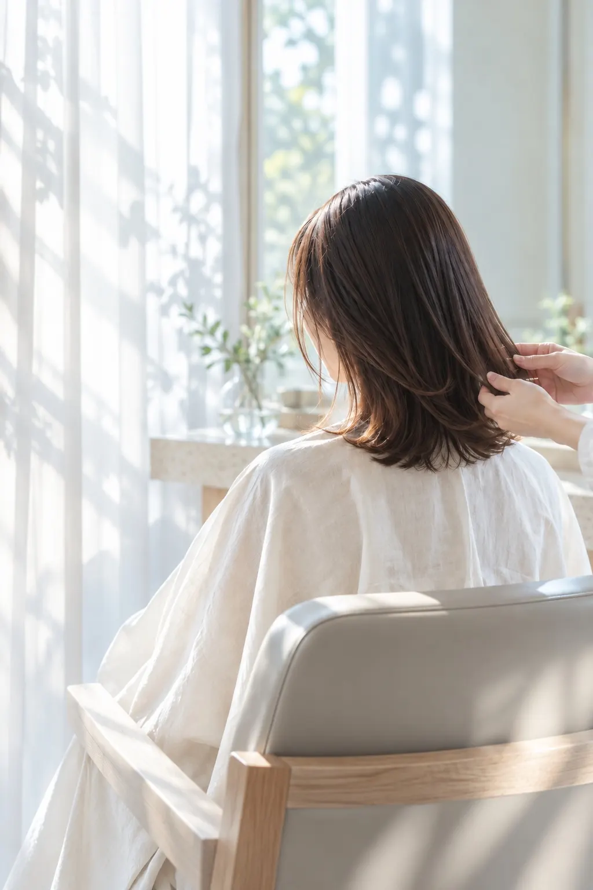
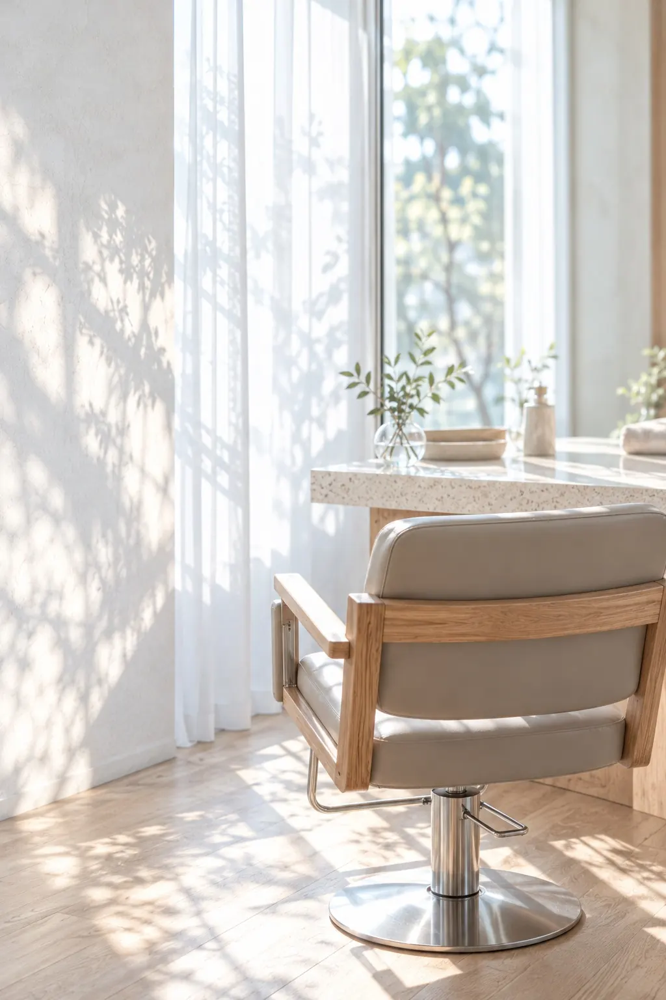
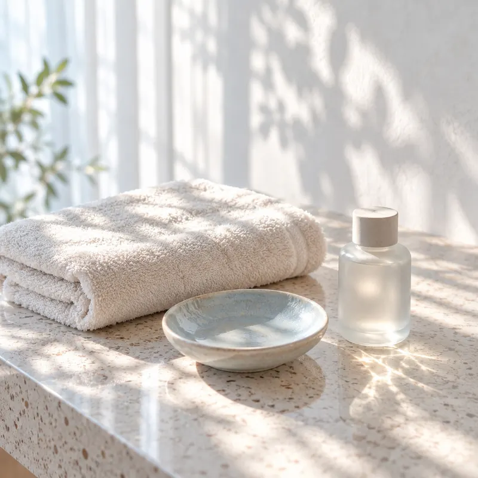
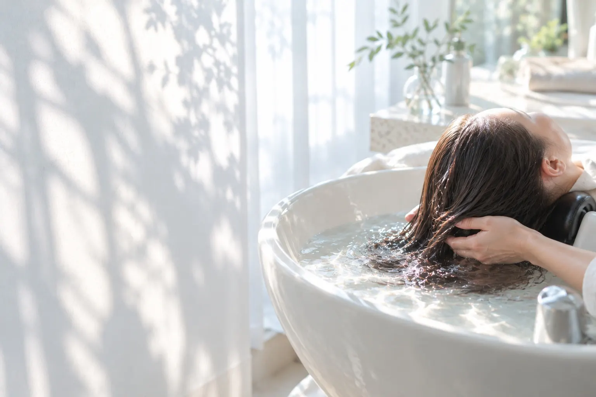
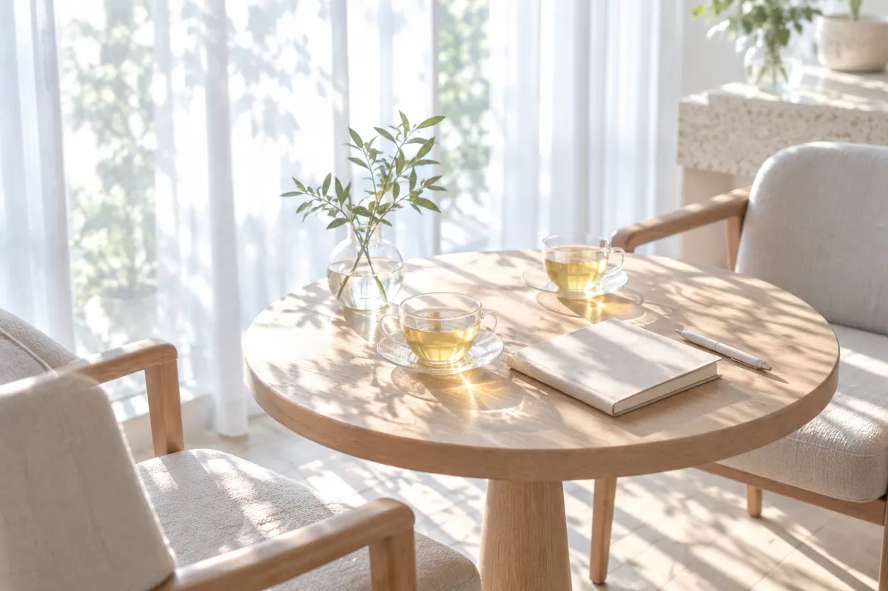
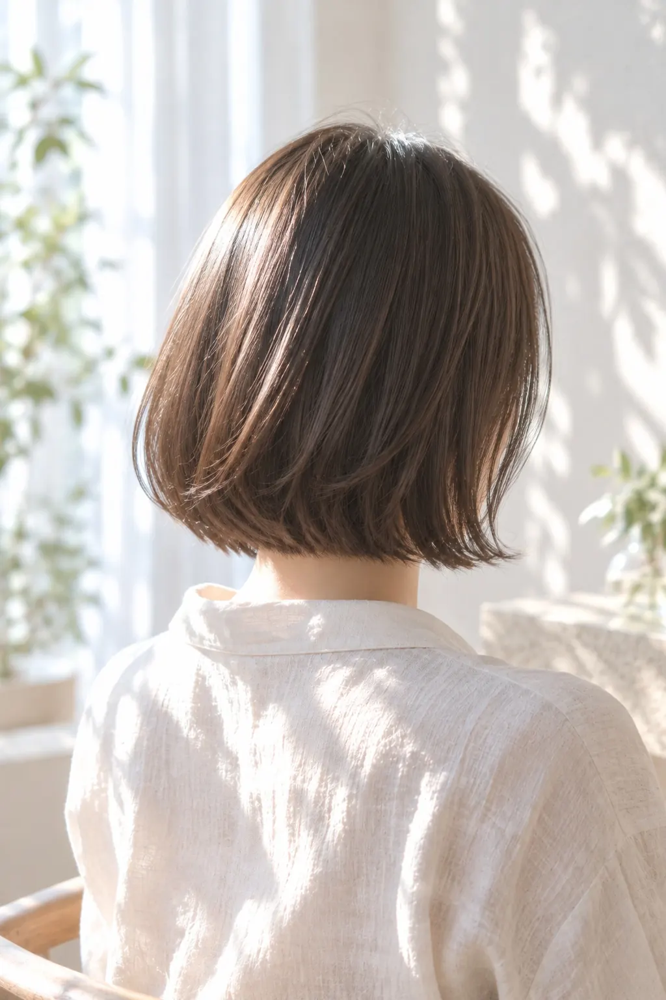
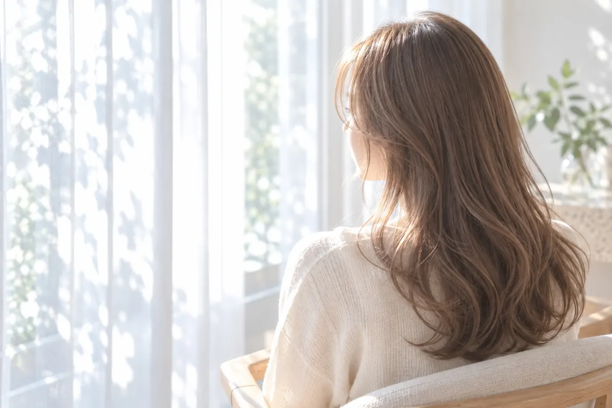
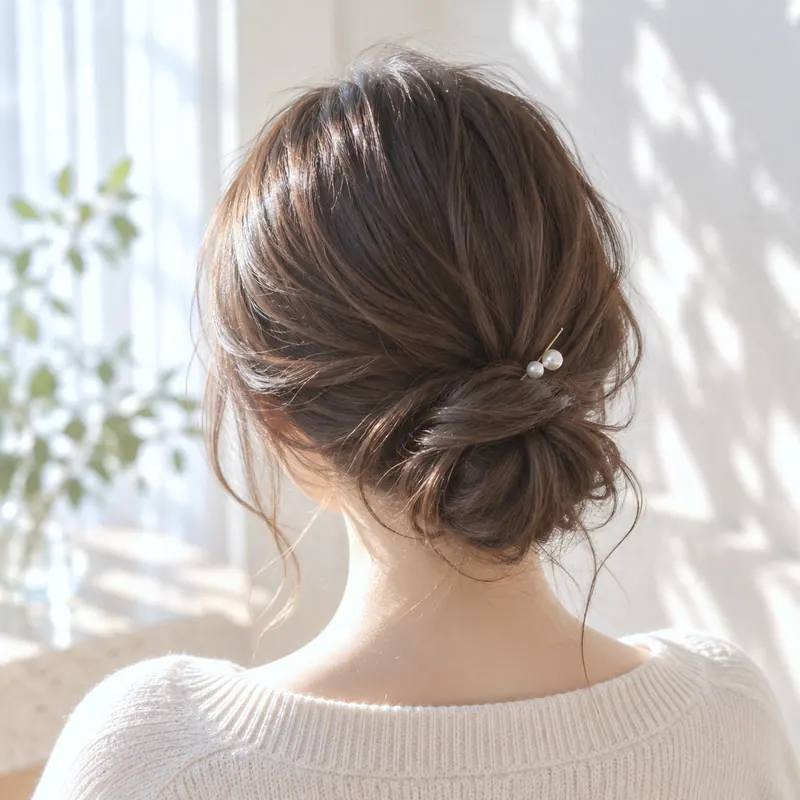
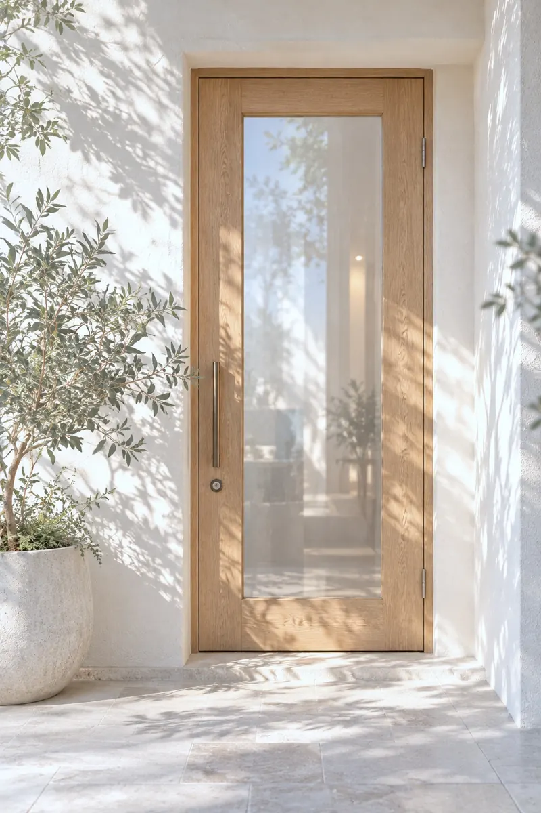

Hair salon & Head spa
光をまとう、やわらかな髪へ。
窓辺の自然光と、やさしい水の音。
Lueur（リュール）は、髪と頭皮をゆっくりと整えるヘアサロン＆ヘッドスパです。


Concept
ほのかな光のように、そっと寄り添う。
「Lueur」は、フランス語で“ほのかな光”。
朝の光が差しこむ窓辺で、ひとりひとりの髪と頭皮の状態をていねいに見つめ、毎日の暮らしになじむスタイルをご提案します。
カットやカラーで印象を整えるだけでなく、水と指先でゆっくりとほぐすヘッドスパで、髪と心の両方を軽やかに。忙しい毎日の中に、静かに深呼吸できる時間をつくります。

Signature head spa
水と光に、ほどけていく時間。
温かなお湯の音と、ゆっくりとしたリズムの指先。頭皮のこわばりをほどきながら、髪の根元から整えていく、Lueurのシグネチャーメニューです。
シグネチャーヘッドスパ｜60分（サンプル）
Price
料金
掲載の料金はデザインサンプル用の架空の価格です。実在の店舗の料金ではありません。
カット・カラー
- カット
- 5,500円
- カット＋カラー
- 12,100円
- リタッチカラー（根元のみ）
- 7,700円
ヘッドスパ・ケア
- ヘッドスパ 30分
- 4,400円
- シグネチャーヘッドスパ 60分
- 8,800円
- トリートメント
- 3,300円
※ 価格はすべて税込の表記例です（サンプル）。

Flow
施術の流れ
-
カウンセリング
ハーブティーを飲みながら、髪の悩みやなりたい雰囲気をゆっくり伺います。
-
メニューのご確認
髪と頭皮の状態を見ながら、施術の内容と料金をご説明します。
-
施術
自然光の入る席で、カット・カラー・ヘッドスパなどを行います。
-
仕上がりの確認
仕上がりを一緒に確かめ、ご自宅での乾かし方やお手入れをお伝えします。
Gallery
スタイル
光に透ける、やわらかな質感を大切にしたスタイルのイメージです。



※ 掲載写真はAI生成画像によるイメージです。
FAQ
よくある質問
回答は、サロンサイトの構成例としてのサンプルです。
予約はどこからできますか？
このページはポートフォリオ用のサンプルサイトのため、実際のご予約はできません。実在のサロンのサイトでは、ここに予約方法をご案内します。
初めてでも、髪の悩みを相談できますか？
はい。施術の前に、ハーブティーを飲みながらのカウンセリングの時間を設けています。言葉にしにくい悩みも、写真などを見ながら一緒に整理します。
ヘッドスパだけの利用もできますか？
はい。30分のヘッドスパと、60分のシグネチャーヘッドスパをご用意しています（サンプル）。
施術の時間はどのくらいかかりますか？
カットは約60分、カット＋カラーは約120分が目安です（サンプル）。髪の長さや状態によって変わります。
肌や頭皮が敏感でも大丈夫ですか？
カウンセリングで頭皮の状態を確認し、刺激の少ない薬剤や施術の方法をご提案します。気になることがあれば、施術の前にお知らせください。

Access
店舗情報
- 店名
- Lueur hair & head spa（架空の店舗）
- 所在地
- サンプルサイトのため掲載していません
- 営業時間
- 10:00〜19:00（サンプル）
- 定休日
- 火曜日（サンプル）
- 席数
- セット面 2席・ヘッドスパ個室 1室（サンプル）
Lueurは架空の店舗のため、住所・電話番号・地図は掲載していません。実在する同名店舗とは関係ありません。